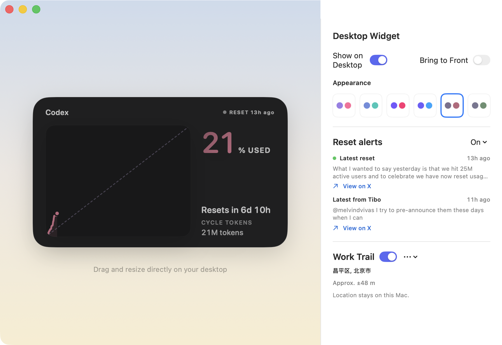
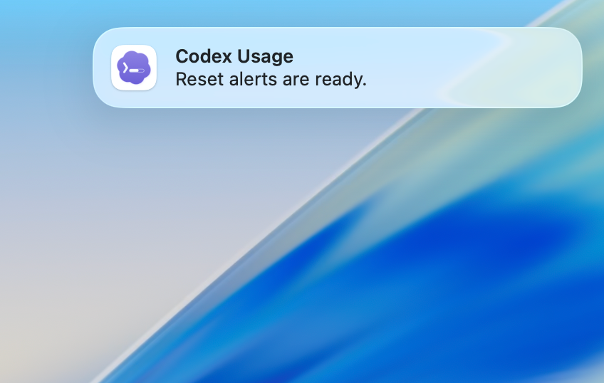

See how token usage tracks toward the expected reset time, and get timely alerts when a reset looks likely—so you can plan ahead and stay in control.

The widget charts token consumption against time in the rolling window, with a steady-pace guide line. How much you used and how fast, clear in one glance.
Reset Radar watches community signals and alerts you before each reset, so you know when fresh quota lands and can plan heavier runs.

Also on board: menu bar status, a movable widget with palette controls, session and daily summaries, and local-only privacy.